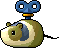

Lv. 36 · #3210208
레츠
등에 태엽장치가 달려있는 장난감 얼룩 쥐 몬스터이다. 라츠와 이름이 매우 유사하지만 레츠는 핼리오스탑에만 서식하며, 먹성이 좋아서 가리지 않고 쉴 새 없이 아무거나 먹어치운다. 아랫마을 식량 부족의 주범이다.
스탯
레벨 36- HP
- 1,400
- MP
- 0
- EXP
- 78
- 넉백 가능 데미지
- 1+
- 물리 데미지
- 120
- 마법 데미지
- 0
- 물리 방어력
- 90
- 마법 방어력
- 85
- 속도
- 5
- 36레벨 에서의 필요 명중
- 65.988
- 메소
- 270.0
- 속성관계
- 미기재
- 체경비
- 17.95
- 형태
- 무기물형
출현 지역
출현 맵 3개맵 이름을 누르면 메이플노트의 맵 정보가 열립니다.
드롭 테이블
전체 30개| 아이템 | 아이템 ID | 드롭 확률 |
|---|---|---|
| 해바라기씨 | 4000168 | 50% |
| 하얀 포션 | 2000002 | 1% |
| 파란 포션 | 2000003 | 1% |
| 정부미 | 4031279 | 1% |
| 활전용 화살 | 2060000 | 0.8% |
| 석궁전용 화살 | 2061000 | 0.8% |
| 명사수의 물약 | 2002005 | 0.3% |
| 미스릴의 원석 | 4010002 | 0.3% |
| 행운의 크리스탈 원석 | 4004003 | 0.08% |
| 마법의 가루(노랑) | 4007004 | 0.03% |
| 마법의 가루(파랑) | 4007002 | 0.03% |
| 창 제작의 촉진제 | 4130008 | 0.01% |
| 두손도끼 제작의 촉진제 | 4130006 | 0.01% |
| 그린 가이즈 | 1002173 | 0.01% |
| 블루 아모리아 치마 | 1061048 | 0.01% |
| 블루 아모리아 로브 | 1041052 | 0.01% |
| 캣츠 아이 | 1032008 | 0.008% |
| 레드 레골리스 | 1041065 | 0.008% |
| 레드 레골리스 바지 | 1061060 | 0.008% |
| 블루 후르츠 | 1051008 | 0.008% |
| 한손도끼 제작의 촉진제 | 4130003 | 0.008% |
| 블루 그레이트 헬멧 | 1002048 | 0.008% |
| 페탈 스태프 | 1382018 | 0.007% |
| 청 진월장화 | 1072127 | 0.006% |
| 다크 문슈즈 | 1072117 | 0.006% |
| 골드 클리브 | 1082076 | 0.006% |
| 골드 브레이스 | 1082072 | 0.006% |
| 활 공격력 주문서 60% | 2044501 | 0.004% |
| 블루 브레이스룩 | 1052110 | 0.0016% |
| 브라운 바르비 | 1082195 | 0.0011% |
조건에 맞는 드롭 아이템이 없습니다.
확률은 메이플노트에 게시된 값입니다. 아이템 이름을 누르면 원본 아이템 정보가 열립니다. 과거 버전 데이터이므로 실제 메이플랜드와 다를 수 있습니다.